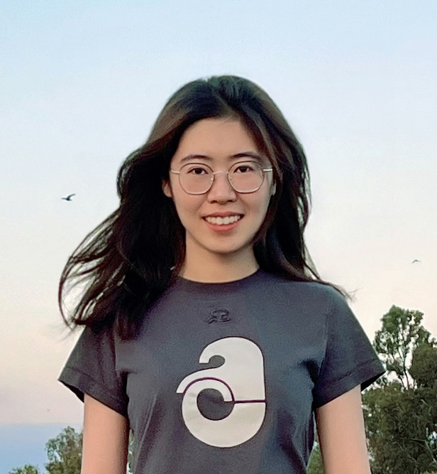

I am a Ph.D. candidate in Computer Science at the UCLA Systems Lab, advised by Prof. Harry Xu.
My research lies in machine learning systems (MLSys), with a focus on building cost-efficient, low-latency systems for compound AI workloads, including large language model (LLM) serving (Prism, ConServe), multi-agent systems (Pythia), and video QA pipelines (VQPy).
Before joining UCLA, I was a Senior AI Frameworks Engineer at Intel, where I was a core developer of BigDL, an open-source framework for scalable big data analytics and AI, and shipped distributed AI pipelines deployed at production scale. I received my bachelor's and master's degrees from Zhejiang University.
Looking for interns! If you're interested in LLM infra and would like to help build the open-source kvcached project together, please send me an email and let's chat.
An open-source library that brings elastic GPU memory sharing to LLM serving, enabling cost-efficient colocation of multiple LLMs with drop-in support for SGLang and vLLM.